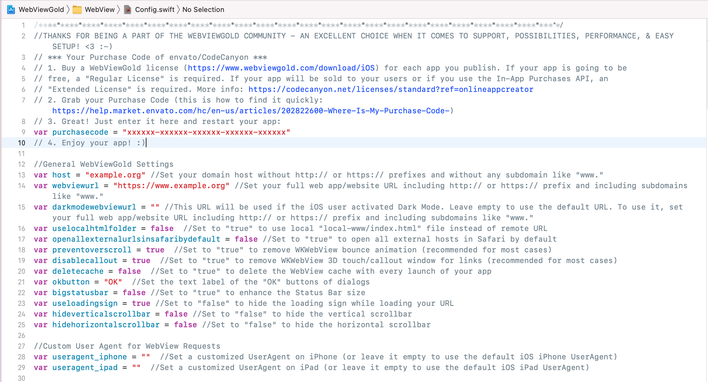
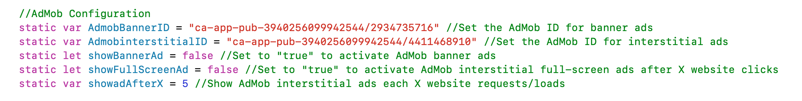

What's new: Changelog
See the changelog here.
1) Setting up your web app/website/HTML files
Option A) Use a URL for accessing your web application (= store files online)
Create a mobile-optimized website, for example, using jQuery Mobile and upload your site to your webserver/webspace. webbytron supports all kinds of web apps/websites (including HTML, PHP, WordPress, Progressive Web Apps, HTML 5 Games, WiX, apprat.io, bubble.io, …). Please make sure to optimize your website to feel like an app. Please consider a professional User Experience/UX Review on UXreviewer.io or similar services for best App Store approval results. Such a UX review also helps you to achieve better customer retention in general for your product with suggestions for improvement.
Option B) Use a local HTML folder for accessing your web application (= store files within the app)
webbytron supports web apps bases on local HTML folders, too: Copy your HTML/CSS/JavaScript files to Xcode and set uselocalhtmlfolder to true (see next step). Make sure to import every single file into Xcode by dragging them into Xcode. Placing all data to root folder might be necessary (so make sure to not create or use subfolders within the local-www folder – do not access "css/style.css" but "style.css" within your files). Please consider a professional User Experience/UX Review on UXreviewer.io or similar services for best App Store approval results. Such a UX review also helps you to achieve better customer retention in general for your product with suggestions for improvement.
Option C) Use an HTML folder if the user is offline, and use a remote URL if the user is online (= store files online + store backup/fallback files within the app)
Copy your HTML/CSS/JavaScript files to the "local-www" folder. Make sure to import every single file into Xcode by dragging them into Xcode. Placing all data to root folder might be necessary (so make sure to not create or use subfolders within the local-www folder – do not access "css/style.css" but "style.css" within your files). Set uselocalhtmlfolder to false (see next step) and set offlinelocalhtmlswitch to true (see next step). Please consider a professional User Experience/UX Review on UXreviewer.io or similar services for best App Store approval results. Such a UX review also helps you to achieve better customer retention in general for your product with suggestions for improvement.
2) Setting up webbytron for iOS
Download the webbytron app template for iOS here and download the Xcode app from the Mac App Store. If you do not own a Mac for running the required Xcode app, check out MacInCloud as it allows you to rent a virtual Mac online starting at 1 USD per hour (we are not affiliated with the provider of that service). Using that service, you can build your iOS apps based on webbytron, even without owning a Mac.
Afterward, open webbytron.xcworkspace (instead of WebView.xcodeproj):
{kind=link}
Within Xcode, open Config.swift and you will see a document like this:

Here you can set up your app easily. Setting up apps with webbytron is very easy and does not require any coding knowledge. Please don't forget to add your Envato/CodeCanyon Purchase Code in the purchasecode field for each app published by you. One license per each customized end product is required. License info of your CodeCanyon purchase: https://codecanyon.net/licenses/standard
{kind=link}
Please take a look at this overview of all built-in configuration options:
3) Change App Name, Icon, and Splash Screen
It's effortless to change the Display Name of your app:
{kind=link}
Just insert a new name that should be displayed on the iOS home screen.
Afterward, include your app icon. A beautiful app icon is a perfect first impression for your customers. It's easy to add your app icon to your webbytron project:
Just replace the included image files with your own resized image files. Alternatively, use this helpful tool: Asset Catalog Creator - App Icon, Image Set & Launch Screen Generator for iOS & OS X by Bridge Technologies Limited (we are not affiliated with the developer company).
Splash Screen: Would you like to make your app more attractive to your customers and display your branding as a welcome image? Sure, add your individual splash screen graphics. Just replace the splash.gif file in the main folder of the Xcode project. Make sure to use GIF format (animated or static). You can use any GIF image resolution as long the width dimension equals the height dimension (e.g., 128px*128px, 512px*512px, or 1024px*1024px).
Set the remainSplashOption option (can be found in Config.swift file) to true if you want to display the Splash Screen until your page was loaded successfully. Otherwise, it will be displayed for a short time only, and the native iOS loading indicator will begin.
Use the splshscreencolor option (can be found in Config.swift file) to modify the background color of the splash screen. Color options can be found here.
{kind=link}
Modify iPhone X/XS/XS Max Safe Area size
The jump from iPhone 8 to iPhone X changed a lot in terms of User Interface in the mobile industry. Depending on your web app design, the lower menu bar may be positioned incorrectly on the iPhone X/XS/XS Max/11/11 Pro due to the safe area which replaces the Home button on these devices. The good news is that webbytron allows resizing the viewport height easily. Please search for this code snippet part (CMD+F) in WebViewController.swift file where you can change the border value 20 to any desired value like 10, 30, ...:
{kind=link}
HTML5 Geolocation API
The HTML5 Geolocation feature enables users to communicate their own position to a web application. Check out the Mozilla guide on how to implement geolocation into your website or web app. In webbytron, the HTML5 Geolocation API will work by default after you integrated it into your web content. Since iOS 10, Geolocation is available for https-sites only, so please make sure to use a web app URL starting with https:// instead of http:// when using location requests. Demo: https://www.w3schools.com/html/html5_geolocation.asp
Push Notifications API via OneSignal, Firebase, and JavaScript
Push notifications are notifications that appear on your smartphone without opening the app. These types of messages allow fantastic interaction with customers and users of the app. Your app does not have to be open to receiving these kinds of notifications. This way, your customers do not miss any important news or messages. Push Notifications are suitable for many cases, e.g., for updates to orders, live tickers, or social media community. There must be an internet connection to allow app users to receive push messages. webbytron supports multiple ways of reaching your users via push notifications. If you do NOT want to use push notifications at all, open Config.swift and set askforpushpermissionatfirstrun to false in order to prevent asking the app user for notification permission.
Option 1: Use Local Push Notification JavaScript API
You can insert a piece of code (JavaScript) in your website, to define a push notification, which can be shown after your app was closed (while scheduling it during the app is open). This works without OneSignal configuration at all.
<script>
var seconds = 120; //seconds from now on
var message = "It is Happy Hour now! Check it out!"; //the message
var button = "Open App"; //the text of the button
window.location.href = "sendlocalpushmsg://push.send?s="+ seconds +"=msg!"+ message +"&!#"+ button +"";
</script>
It could be used for different situations (countdowns, happy hours, specific reminders, ...).
To cancel all scheduled local push notifications run:
<script>
window.location.href = "sendlocalpushmsg://push.send.cancel";
</script>
Option 2: Use OneSignal Remote Push Notifications
If you want to use OneSignal in your app, activate these options in Config.swift (by switching the values from false to true) and make sure to also set oneSignalID.

Now Generate an iOS Push Certificate and import it:
Yay, you are done. You can send push notifications now:
If you want to use OneSignal URL Deeplinking (opens a specific URL when clicking on your notification), please add the desired URL with a custom field called url:
{kind=link}
On the OneSignal.com Backend, you can fill in this key-value-pair window after clicking on "Advanced settings". Using the OneSignal API, you can add the "url" field to the API request (https://documentation.onesignal.com/docs/onesignal-api).
Do you want to get each individual user ID on your server for further processing and individual user push messages? Just activate the kPushEnhanceUrl option in Config.swift (by switching the value from false to true) in order to append ?onesignal_push_id=XYZ to your WebView URL. If your WebView URL is https://www.example.org, webbytron will call https://www.example.org?onesignal_push_id=XYZ instead. Only your FIRST URL request will get that GET variable, so save it in a session or in a cookie to access it on your linked pages.
Option 3: Use Firebase Remote Push Notifications
1. Create a Firebase project
Before you can add Firebase to your webbytron app, you have to create a Firebase project in your Firebase Console.
2. Register your app with Firebase
After you created your Firebase project, you can add your webbytron app to it.
a. In the center of the Firebase console's project overview page, click the iOS icon to launch the setup workflow.
b. If you've already added an app to your Firebase project, click Add app to display the platform options.
Enter your app's bundle ID in the iOS bundle ID field. Find your bundle ID, as follows:
Open your app in Xcode.
Select the top-level app in the project navigator, then select the General tab.
The value of the Bundle Identifier field is the iOS bundle ID (for example, com.onlineappcreator.webbytron).
Make sure that you enter the ID that your app is using. You cannot add or modify this value after you register your app with your Firebase project.
c. Enter other app information as prompted by the setup workflow.
– App nickname: An internal, convenience identifier that is only visible to you in the Firebase console
– App Store ID: Used by Firebase Dynamic Links to redirect users to your App Store page and by Google Analytics to import conversion events into Google Ads. If your app doesn't yet have an App Store ID, you can add the ID later in your Project Settings.
4. Click the Register app button.
5. Download GoogleService-Info.plist
Click Download GoogleService-Info.plist to obtain your Firebase iOS config file (GoogleService-Info.plist) and replace the sample file already included in the webbytron project.
6. Activate Firebase in webbytron
Go to Config.swift file and turn the kFirebasePushEnabled variable to true.
7. Sign your app using the Firebase certificates
Sign your app using the Firebase provisioning profile: How To
8. That's it!
Do you want to get each individual user ID on your server for further processing and individual user push messages? Just activate the kFirebaseEnhanceUrl option in Config.swift (by switching the value from false to true) in order to append ?firebase_push_id=XYZ to your WebView URL. If your WebView URL is https://www.example.org, webbytron will call https://www.example.org?firebase_push_id=XYZ instead. Only your FIRST URL request will get that GET variable, so save it in a session or in a cookie to access it on your linked pages.
Option 4: Use bubble.io Push Notifications
1. Create a bubble.io app
2. Install the webbytron OneSignal Push plugin:
3. Follow the OneSignal instructions (see above) and the plugin instructions (see here and here).
Banner and Interstitial ads via AdMob API
AdMob offers the possibility of monetizing mobile projects. It is a Google-provided service for integrating Google ads into mobile applications. The AdMob program allows mobile application developers to incorporate ads on iOS and Android platforms. The ad space provided by the app developer is paid by clicks (CPC, Cost Per Click) or impressions (CPM, Cost Per Mille). webbytron is ready for activating AdMob ads by default, and it allows you to monetize your WebView-based applications.
Open Info.plist file and set your AdMob global account ID in the GADApplicationIdentifier field:
You can activate and deactivate banner and/or interstitial ads and define the interval of appearing interstitial ads. Please set your AdMob IDs in Config.swift file before launching your app:

For more information, please consider the official AdMob SDK documentation as well (but skip the setup parts as webbytron already includes the framework).
{kind=link}
{kind=link}
Interstitial Ads via Facebook Audience Network
The Facebook Audience Network offers the possibility of monetizing mobile projects. It is a Facebook-provided service for integrating Facebook ads into mobile applications. The Audience Network program allows mobile application developers to incorporate ads on iOS and Android platforms. The ad space provided by the app developer is paid by clicks (CPC, Cost Per Click) or impressions (CPM, Cost Per Mille). webbytron is ready for activating Facebook Audience Network ads by default, and it allows you to monetize your WebView-based applications.To enable Facebook Ads, the following constants in Config.swift will need to be set
{kind=link}
You must create a Facebook Audience Network account and create a property under integration in the Monetization Manager. Then you must connect an iOS app (however, you do not need to link to a published iOS app for testing purposes)
Follow this guide for reference: https://www.facebook.com/business/help/191133327919314
Further considerations:
- A real iOS device must be used to test (not a simulator)
- The device must be added as a test device, see https://developers.facebook.com/docs/audience-network/setting-up/testing/platform
- Facebook must be installed and logged in on the device
- “Limit Ad Tracking” or any similar setting that may be released with upcoming iOS versions must be disabled.
Please note, currently, only interstitial ads (full-screen ads) are supported. Banner ads will also be supported soon.
Activate HTML background audio
For some scenarios, it may be useful to play audio content even after minimizing the app (for example, if you're making a radio stream or your music available in the app). Please take a look at the video to learn how your app's audio can play even when users switch to a different foreground app or when they lock their iPhone or iPad.
Downloader for PDF, ePub, Wallet, Documents, and Music Files
If you offer to download or view documents or other downloads in your web app, our webbytron Download API will help you for the tremendous and native user experience of your app.
Save images to the camera roll of the user by calling links with savethisimage://?url= prefix:
<a href="savethisimage://?url=IMAGE URL HERE">Link</a>
Save files by calling links with a relevant suffix (e.g., .mp3):
<a href="https://www.example.org/file.pdf">Link< PDF/a>
<a href="https://www.example.org/file.mp3">Link mp3 Music</a>
<a href="https://www.example.org/file.mp4">Link mp4 Music</a>
<a href="https://www.example.org/file.wav">Link wav Music</a>
<a href="https://www.example.org/file.epub">Link epub eBook</a>
<a href="https://www.example.org/file.pkpass">Link Passbook / Apple Wallet</a>
<a href="https://www.example.org/file.docx">Link Word</a>
<a href="https://www.example.org/file.pptx">Link PowerPoint</a>
<a href="https://www.example.org/file.xlsx">Link Excel</a>
You can add more filetypes that should trigger the file downloader functionality (e.g., .epub, .zip, ...) This can be done via the list variable extentionARY that can be found in the Config.swift file.
iCal Calendar API
webbytron allows the entry of calendar entries if you link to an .ics file:
<a href="https://www.webbytron.com/demo/test.ics">Save to Calendar</a>
UUID API
webbytron allows passing a non-personal, unique device ID (UUID / "Universally Unique Identifier") to JavaScript, which can be used to identify an iOS device uniquely. This can be useful, for example, to save settings or values on the server-side and restore them on the client-side. Please respect local and international privacy regulations if you use this API.
<a href="get-uuid://">Get UDID</a>
<a href="#" onClick="alert(uuid);">Show UDID</a>
Reset App API
Sometimes only a restart helps. This is true in life as well as in digital life. Click on this link to reset your users' app to app factory settings (by clearing all cookies and cache):
<a href="reset://">Link</a>
Insert the https://www.onlineappcreator.com/reset_test.html URL into your webbytron app for a demo.
Show/hide the loading sign manually
The native iOS loading indicator of webbytron will be triggered automatically when a page starts or finishes loading. However it could be useful to know that it can be triggered manually as well (e.g., you could show the activity indicator as well when waiting in your live chat queue, or some cloud server action is running in the background, and you want to visualize the process on the client):
<a href="spinneron://">Show the loading spinner</a>
<a href="spinneroff://">Hide the loading spinner</a>
URL Handling API
It often makes sense in WebView based apps to treat different web addresses differently. If you place a social media button in your web app, a click on it should probably not open the social media page in your app, but in the right app (e.g., the system browser). It's good that webbytron has all the features to enable powerful configuration and treat links the way you want it. Open Config.swift and configure the URL Handling API easily:Open links in a tab/additional In-App-Browser
There are some cases for links that do not feel to be "important enough" to open them in the Safari browser externally but "too specific" for opening them in the app WebView itself (e.g., your Terms and Conditions page). For this particular kind of links, we added a creative idea of URL Handling: a tab that opens an additional in-app-browser over the main WebView content itself. It will look like this:
As you see, this in-app-browser includes an address bar and navigation buttons (including an "Open in Safari" button). That's a considerable difference to the primary, full-screen WebView content. So this kind of combination of app and browser experience is great for tutorials, knowledge databases, and all type of content that requires any type of navigation. To use this kind of in-app-browser, link to an URL in this format:
{kind=link}
<a href='#' onClick="top.location.href='https://www.google.com';">Open Google</a>
Please insert https://www.webbytron.com/demo/testlinks.php as WebView URL to test how your app will handle different types of links. You can open the same domain https://www.webbytron.com/demo/testlinks.php in your desktop browser and see the source code to copy & paste the way of link.
Custom CSS API
The Custom CSS feature of webbytron allows you to customize the appearance of your web application without the need to customize the CSS style sheets of your web application itself. The custom CSS classes will be applied to all website loads requested by your application built with webbytron. Just insert the custom CSS in the cssString variable in the Config.swift file.
{kind=link}
Universal Links API (configure a link scheme like webbytron://)
With Universal Links, it becomes easy to link to content inside your app. Apple introduced the feature with iOS 9, and it's supported with any version later than iOS 9 as well. webbytron allows configuring a link scheme like webbytron:// which can be triggered from the Mail app, Safari app, ... and opens the attached link in the WebView app.
Please change the scheme to your own app name (like your-app-name:// instead of webbytron://) in Info.plist:
Afterward, activate the ShowExternalLink option in Config.swift file:
Done! :) Example format:
{kind=link}
{kind=link}
webbytron://url?link=https://www.google.com
(would open google.com in the WebView app).
App Sharing Dialog API
The Sharing Dialog functionality of webbytron gives your app users the ability to share the download link of your application with their friends, family, and colleagues. It's an incredibly smooth and effective way of expanding the user base of your application.
webbytron allows triggering a native App Sharing Dialog dialog (WhatsApp, SMS, Mail, ...) by calling shareapp:// links:
<a href="shareapp://sharetext?=SHARING TEXT AND SHARING URL HERE">Share app</a>
In-App Purchase & In-App Subscription API
Within some apps, you can buy additional content or services. These kinds of purchases are called "in-app purchases". They can be an attractive source of revenue for developers and are very convenient for customers as they use existing accounts and payment sources for settlement. webbytron allows triggering App Store In-App Purchases. Make sure to own an Extended License of webbytron if you plan to use this feature in an end product. In the first step, insert the App Store Connect details of your In-App Purchase Shared Secret in Config.swift file.
Afterward, just link to this kind of URL:
<a href="inapppurchase://?package=IN-APP_PURCHASE_PRODUCT_IDENTIFIER&successful_url=https://www.google.com&disableadmob=true">Buy In-App Purchase</a>
For subscription products, use this kind of URL scheme:
<a href="inappsubscription://?package=IN-APP_PURCHASE_PRODUCT_IDENTIFIER&successful_url=https://www.google.com&expired_url=https://www.yahoo.com">Start In-App Subscription</a>
All information about the In-App Purchase Product Identifier can be found here.
You can identify the user server-side. e.g., the site /buy_now.php redirects to In-App-Purchase API and that API redirects to /thanks.php, you can still access the user/session cookies server-sided and identify the user who just bought that In-App-Purchase. In this use case, please make sure that you deactivate the deletecache option in the Config.swift file in order to keep cookies activated by the In-App Purchase process.
QR Code Scanner API
QR codes are two-dimensional versions of the barcode. QR stands for "quick response". The term refers to the immediate access to the hidden information in the code. Both their design and their functions can be personalized, and they are ideal for connecting conventional print media with any and interactive online offer. webbytron offers a built-in QR code scanner that allows scanning these codes and opening the encrypted URL in the WebView afterwards.
Link to this kind of URL to trigger the QR Code Scanner:
<a href="qrcode://">Scan QR Code</a>
Build and publish your app
Your app is ready, and now it's time to upload it to the Apple App Store and reach an audience of millions? Exciting! The following section will show you how to do it - whether you want to do it yourself or have some work done for you.
Option A) Full App Publishing Service
Sometimes you just want to get more comfortable. Especially when you have a lot to do anyway, or more important decisions to make, or an important deadline. Treat yourself to some support - the appsubmitter.io service is the first choice if you want to have your app published by experts - no certificate stress, no annoying screenshot making, no upload problems, or anything else. Of course, via your own developer account, without any restrictions. Full refund if the app gets rejected by Apple. Just book a video call.
Option B) Manual Publishing Process
You don't want to use our pleasant submission service, but you want to deal with it yourself? Sure, follow this guide:
Use your Apple Developer Program Subscription to publish your app in the App Store. Before uploading, please change the package name:
Afterward, please add customized texts to the permission details in terms of location, photo/camera access, and all other API details. Delete permissions which are not required by your app. You find the details in Info.plist file:
Afterward, please consider a professional User Experience/UX Review on UXreviewer.io or similar services for best App Store approval results. Such a UX review also helps you to achieve better customer retention in general for your product with suggestions for improvement.
Great, now you are ready for the App Store submission of your web app. App Store approval works in most cases without any problems but highly depends on the content you provide in your app as webbytron does not provide content by itself. Please make sure to submit an app using a website/web app that behaves like a mobile app (for example, by using responsive design). Make sure that the content does not contradict the legal requirements of the Apple Developer Program. Use different link colors than standard HTML colors for better user experience.
{kind=link}
Afterward, please follow the steps of this second video:
One addition to the tutorial video: In timestamp 07:00, after creating the App Identifier, please make sure to activate both the capabilities "App Groups" and "Push Notifications" in the App Identifier section on the Apple Developer Portal (choose the correct App ID here). See these screenshots: https://prnt.sc/xz4hg5 & https://prnt.sc/xz4j01. Restart Xcode afterward.
The App Store upload asks you whether you use encryption? We do not offer legally binding advice, but "No" must be indicated here in most cases. However, if HTTPS is used, an annual security report may have to be submitted to US authorities. More information about this can be found here.
The App Store upload asks you whether you use the Ad ID / IDFA? The Ad ID is included because AdMob is integrated, but not active by default. Removing the AdMob SDK will produce a lot of dependency errors, so the easiest suggestion would be to choose "Yes" at the "Does your app use the Ad ID?" question and selecting the tickbox "Attribute this app installation to a previously served advertisement" only (leave all other tickboxes blank). So, if you use AdMob banner/interstitial ads in webbytron, please configure this screen like this. If you do not use AdMob banner/interstitial ads in webbytron while the SDK is still embedded (which is the typical case while not using AdMob in webbytron), please select these options.
If Apple rejects your app, please use Apple Resolution Center to explain the app feature in general (like "Our app enables our existing users to login in/use our products on their handheld device/....). If Apple still rejects your app, we can offer you a full refund of the webbytron license (by claiming within 14 days after purchase). Just contact us by mail.
Congrats on your own published iOS app! 🎉
If Apple rejects your app, we offer you a full refund of the webbytron license (by claiming within 14 days after purchase). Just contact us by mail.
No time or don't you feel like signing and uploading manually? Consider the appsubmitter.io service:
Of course, after the release should be celebrated first! But then perhaps the next project is already on the agenda? Our App Specialists are also happy to help you with individual development services for web apps, iOS apps, Android apps, chat bots, marketing ideas, and much more. Learn more
Credits / License / Upgrade to Extended License
Please don't forget to add your Envato/CodeCanyon Purchase Code in the purchasecode field for each app published by you. One license per each customized and published end product is required.
You will need an Envato/CodeCanyon Extended License if any of these cases apply:
- You charge your users for the App Store download
- In-App Purchases API or In-App Subscription API will be used in your app
- You sell your final app on any marketplace
If you already bought the Regular License, you can upgrade the existing license here. Alternatively, if you do not want to request a refund or upgrade the license, you can re-use your existing Regular License for another app covered by the Regular License.
All rights (e.g. of images) belong to their respective owners. The provider of this source code is OnlineAppCreator.com c/o jocapps GmbH - registered in Germany - and is not affiliated with Apple. IOS is a registered trademark of Cisco and used under license by Apple Inc. iPad, iPhone, iPod, Xcode, and Xcode logo are registered trademarks of Apple Inc.
One license per each customized end product is required. Please take a look for license info of your CodeCanyon purchase: https://codecanyon.net/licenses/standard
webbytron for iOS uses OneSignal-iOS-SDK (© 2017 OneSignal) which is licensed under a modified MIT License; you may not use this file except in compliance with the license.
webbytron for iOS uses SVProgressHUD (© 2011-2018 Sam Vermette, Tobias Tiemerding and contributors) which is licensed under the MIT License; you may not use this file except in compliance with the license.
webbytron for iOS uses firebase-ios-sdk (© 2020 Firebase) which is licensed under the Apache License, version 2.0; you may not use this file except in compliance with the license.
webbytron for iOS uses Google Mobile Ads SDK (© 2020 Google) which is licensed under the Google Developers Site Terms of Service; you may not use this file except in compliance with the license.
webbytron for iOS uses nanopb (© 2011 Petteri Aimonen) which is licensed under the zlib License; you may not use this file except in compliance with the license.
webbytron for iOS uses promises (© 2020 Google) which is licensed under the Apache License, version 2.0; you may not use this file except in compliance with the license.
webbytron for iOS uses protobuf (© 2020 Google) which is licensed under a Google License; you may not use this file except in compliance with the license.
webbytron for iOS uses SwiftQRCodeScanner (© 2017 vinodiOS) which is licensed under the MIT License; you may not use this file except in compliance with the license.
webbytron for iOS uses SwiftyStoreKit (© 2015-2016 Andrea Bizzotto) which is licensed under the MIT License; you may not use this file except in compliance with the license.
webbytron for iOS uses GIF-Swift (© https://iosdevcenters.blogspot.com/).
Rate webbytron
If you have 10 seconds, please rate webbytron (it is a great motivation for future updates ^^):
1. Go to CodeCanyon.net and sign in
2. Navigate to https://www.codecanyon.net/downloads
3. Click the stars, as shown in this picture:
Thank you very much!
Get webbytron for Android

Get webbytron for macOS